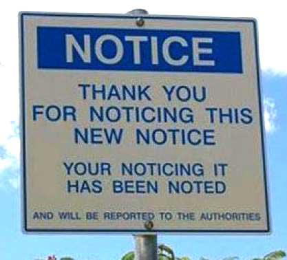

THE TENDER FOR LAW – LIVE EXAMPLE #001 – PROPER NOTICE FOR IDIOTS (c) 2013 ROGUESUPPORT INC. under a Creative Commons Attribution-NonCommercial-NoDerivs 3.0 Unported License.
TONIGHT’S TOPIC: PROPER NOTICE
In one of the many ongoing AQUILAE initiatives, I have cause to produce a NOTICE.
Since I’m using THE TENDER FOR LAW as a notebook for my students, I figure I might as well “kill two birds with one stone” by discussing the aspects of NOTICE here, more specifically PROPER NOTICE.
As a secondary objective we shall learn the difference between a GIFT and a COURTESY.
*spoiler alert* – Courtesy doesn’t mean what you think it means, because like money a COURTESY is, in fact, a…
…TENDER FOR LAW!
As long as there have been professions, there have been LAWs governing them; and a courtesy is one of the oldest tenders for LAW, because it governs the oldest profession. You see, my friends, COURTESIES are for COURTESANS, because THEY’RE THE ONES GETTING FUCKED. If you ACCEPT a COURTESY, you accept that you’re the one getting fucked. I can’t put it any simpler. This is why you NEVER accept courtesies from the government.
The GOVERNMENT is not a PERSON.
The COURT is not a PERSON.
…and if you accept a courtesy from the court, you are putting it on the PUBLIC RECORD that in ALL LEGAL EXCHANGES, YOU’RE THE ONE GETTING FUCKED!
A GIFT, on the other hand…
… is exactly what you think it means.
Digressing from the spoiler alert (because when I “spoil” it’s hard core), and returning to the NOTICE, I shall now discuss the practical aspects of PROPER NOTICE. We’ll start with one of the simplest notices:
KEEP OFF THE GRASS.
Is this PROPER NOTICE?
Yes it is, however the LEGAL strength of this notice is dependent on WHERE THE NOTICE IS. The terms of the notice, “KEEP OFF THE GRASS”, is far different for a PUBLIC PARK than say, for example… A HOUSE FULL OF RUSSIAN MOBSTERS. Ignoring the NOTICE has DIFFERENT CONSEQUENCES depending on WHERE IT IS. If you are going to wield LAW, your NUMBER ONE GOAL SHOULD BE TO REMOVE VARIABLES, and I have just described a big one!
How do you remove this variable?
Let’s look at another PUBLIC NOTICE that all of us have seen.
NO PARKING
On the surface, “NO PARKING” and “KEEP OFF THE GRASS” are functionally the same, however, unlike “KEEP OFF THE GRASS”, a “NO PARKING” sign will also give you notice as to WHO PUT IT THERE. This removes the variables that “KEEP OFF THE GRASS” has.
We have removed the question as to WHO is saying this, and as a byproduct, the consequences of ignoring the notice. As I’ve mentioned throughout the TENDER FOR LAW, the question “WHO are you?” puts the court in the most jeopardy. Identifying WHO you are when giving a notice creates what’s called “PROPER NOTICE”. The primary goal of a LEGAL document is to remove all possible variables to accomplish its goal. “NO PARKING” is pretty specific. It reduces the variables to “PARKED”, and “NOT PARKED”. “NOT PARKED” is the GOAL of the notice. “PARKED” is something to be discouraged.
If it is a TRUST and not a PERSON WHO posts the NOTICE, it is what is known as a BY-LAW. This means that should you choose (of your own free will) to interact with the TRUST, you are subject to the BY-LAWS. TRUST LAW is the HIGHEST LAW. It trumps ADMIRALTY LAW. It trumps CANON LAW. It is the HIGHEST LAW.
Thus endeth the preamble. Let’s draw us up a NOTICE.
In this particular case a VESSEL has been LAWFULLY transferred to the AQUILAE TRUST.
As this VESSEL is NOT in AQUILAE’s custody, a PUBLIC NOTICE must be given laying CLAIM to the VESSEL. This permanently curtails any SALVAGE RIGHTS on said VESSEL. If you construct a VESSEL it is VERILY YOUR RIGHT to transfer ownership of said VESSEL, but one must remember, one does not own the SOUL of the VESSEL, and should the SOUL speak, their word is LAW. If you want to find this LAW, you have only to look in the CAPTAIN’s Log; for the CAPTAIN is the SOUL in question.
Now like every other LEGAL document, the first line on the LEGAL document MUST state what the document is.
CERTIFICATES, BONDS and NOTES are often mistakenly called LEGAL DOCUMENTS, when their actual LEGAL status is, “VALUABLE INSTRUMENT”. It’s not “LEGAL INSTRUMENT” because “LEGAL” does not indicate VALUE. The name itself, says what it is; an INSTRUMENT you can attach VALUE to. But we’re not dealing with “VALUABLE INSTRUMENTS”, because we are transferring this VESSEL from the LOWEST LAW (ADMIRALTY) to the HIGHEST LAW (TRUST). This pulls it out of the ADMIRALTY JURISDICTION.
I’m sure some of you are putting this together already, so I’ll just give away the ending, because I’m a total dick that way.
In ADMIRALTY, on land, you are considered a “VESSEL” in dry dock. You’re not a corporation, you’re a boat in the eyes of ADMIRALTY LAW. You are a VESSEL “ON-THE-HARD” in marine slang. If you are ever in a marina you will notice that the marina leaves everybody who is docked, alone. They won’t speak to the CAPTAINS unless spoken to, and the CAPTAINS are given the utmost respect…
…until they pull your boat out of the water.
When the VESSEL is “ON-THE-HARD” you are now in the marina’s “CUSTODY”, and your STATUS is very, very, different; and this, above all, is why you treat the HARBOUR MASTER with the highest respect. My experience has shown that doing this ALWAYS pays off…
…but I digress.
Let’s construct the first line of our document.
The first line of the document MUST state WHAT IT IS.
Since this is intended to be a PUBLIC NOTICE, it makes sense that “PUBLIC NOTICE” be the first line. There is now no confusion as to what this document IS, and WHO it is . It is not addressing a particular INDIVIDUAL. This means if you give a PUBLIC NOTICE to an INDIVIDUAL, you are DEEMED to have done so as a COURTESY. You’ve already read the spoiler so I’m not building the plot up.
As a courtesy, a copy of this PUBLIC NOTICE (with some redacted shit filled in) will be sent by registered mail to a LAWYER who mistakenly BELIEVES he/she/it has INTEREST in the VESSEL. As an extra COURTESY, a copy of the LIEN on the VESSEL will be included, because we at AQUILAE, if nothing else, are very, very, COURTEOUS.
The next line in any LEGAL DOCUMENT must list any PARTIES being referred to. Since this is a PUBLIC NOTICE there are no PARTIES to list. Therefore PUBLIC NOTICE meets all LEGAL obligation.
After this point in the document, all UNDERTAKINGS must be listed.
So if I posted a PUBLIC NOTICE, I am, in fact, POSTING A BILL. A BILL is also a TENDER FOR LAW. When you receive a BILL for your meal, your ACCEPTANCE makes it LAW.
When you give an ORDER, you have pre-accepted the LAW, and the BILL is simply a FORMality (Everybody GET THAT?).
A BILL in PARLIAMENT is supposedly ordered by the CITIZENS, or “DEEMED ORDERED” by the CITIZENS. This is why the phrase, “POST NO BILLS”, is often found on temporary structures with flat surfaces. “POST NO BILLS” = “POST NO TENDERS FOR LAW”; This means you have been PROPERLY NOTIFIED (PROPER NOTICE because a BILL is a TENDER FOR LAW).
THERE ARE NO HOMONYMS IN LAW
THERE ARE NO SYNONYMS IN LAW
For instance, BILL C1,1985 is a BILL nobody accepted, simply because there’s no sane person that would accept, THE INCOME TAX ACT.
This act has been AMENDED MANY, MANY TIMES, but has never been ACCEPTED into LAW, and like the deluded Christians you’ll find on Dean’s Facebook page, the GOVERNMENT will pretend not to know this, and will IGNORE/ATTACK those who point it out or give PROPER NOTICE.
This is one of the dirtiest “hidden-in-plain-sight” secrets in LAW. The Income Tax Act that was once LAW, for the purpose of paying for the war, expired DECADES AGO, and people just kept paying.
They govern these PAYMENTS OF IGNORANCE through an OUTSOURCED THIRD-PARTY. Douglas Levitt didn’t come into my home with a gun. Cowards don’t do that, and ALL LAWYERS ARE COWARDS. These are strangers who harm people for money. Only cowards choose such a profession. If they wish to inflict violence, they outsource to a third-party, and pay them…
Where was I? OH YES! I remember…
THEREFORE having received PROPER NOTICE (PROPER NOTICE = KNOWLEDGE under LAW), you now KNOW that, should you POST a TENDER FOR LAW, it is NOT REASONABLE TO BELIEVE your TENDER FOR LAW will be there at a LATER TIME.
However in our case, we are going to POST our PUBLIC NOTICE by way of the POSTAL SERVICE.
The POSTal SERVICE (Everybody GET THAT?)
The POSTAL SERVICE is a service provided for POSTING TENDERS FOR LAW. So when you send a REGISTERED letter via the POSTAL SERVICE, this service also BEARS WITNESS (and gives a RECEIPT for it) to the fact that NOTICE was posted to a specific PARTY.
Now; In the interest of time, I shall now draw out that PUBLIC NOTICE, because the PARTY I’m drafting the document for, is wondering why I’m not on the phone with him right now, drafting it with him.
Drafting documents in public is a lot like fucking in public. Many parties will consider it in bad taste, some might even find it disgusting, but in the end it rarely happens, and it’s fun to watch.
What? Am I wrong?
So let’s draft this document RIGHT NOW.
***BEGIN***
PUBLIC NOTICE
TAKE NOTICE that the VESSEL known as ***redacted shit here*** is now the LAWFUL PROPERTY of the AQUILAE TRUST per the wishes of ***redacted shit here***’S CREATOR and GRANTOR.
Therefore: LET IT BE KNOWN THAT AS OF THIS DATE, BEING FEBRUARY 18, 2013, THE VESSEL KNOWN AS ***redacted shit here*** MUST BE CONSIDERED A PRIVATE VESSEL WITH NO COMMERCE EXPECTED AND/OR IMPLIED.
PARTIES ATTEMPTING TO USE ***redacted shit here*** FOR COMMERCIAL PURPOSES MAY BE FINED AT THE RATE OF FIVE THOUSAND DOLLARS PER DAY ($5,000 PER DAY) OR ANY PART THEREOF, FOR UNAUTHORIZED USE.
Questions regarding this NOTICE may be addressed to the DULY AUTHORIZED TRUSTEE CORPORATION, [ROGUESUPPORT INC.] at (416) 994-1700.
AQUILAE TRUST SEAL (Insert lower right)
***END***
And there’s everything you need for A NOTICE.
Viewing women who are “lubed up” by this awesomeness are, of course, invited to drop by for a ride. Extra points if you show up in a “Naughty Schoolgirl” outfit.
